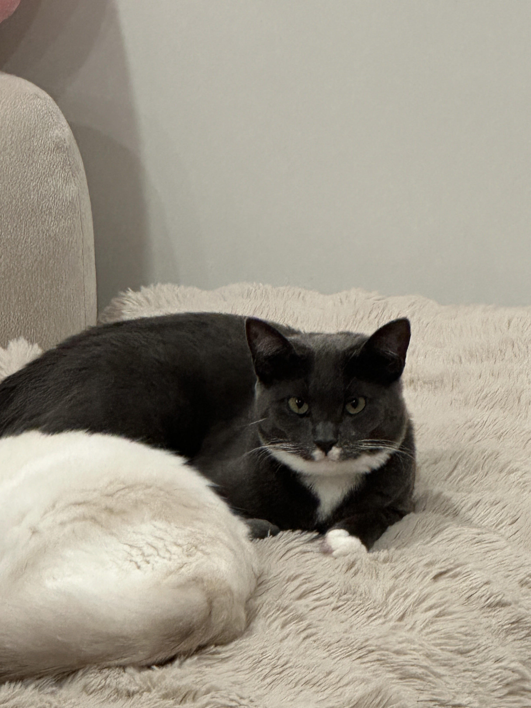
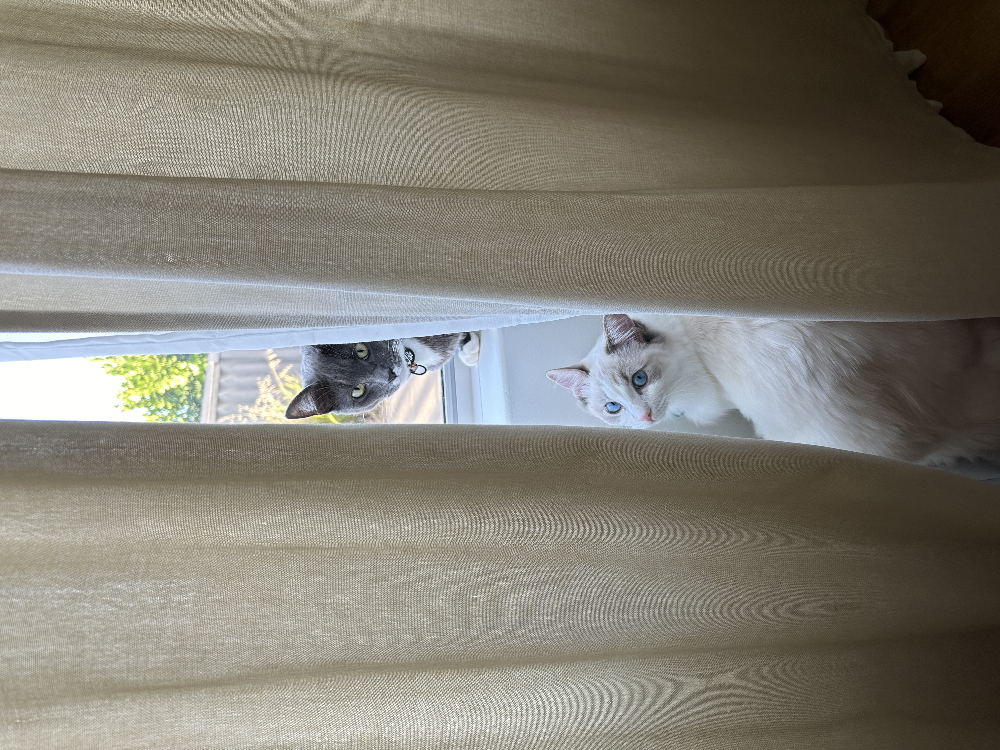
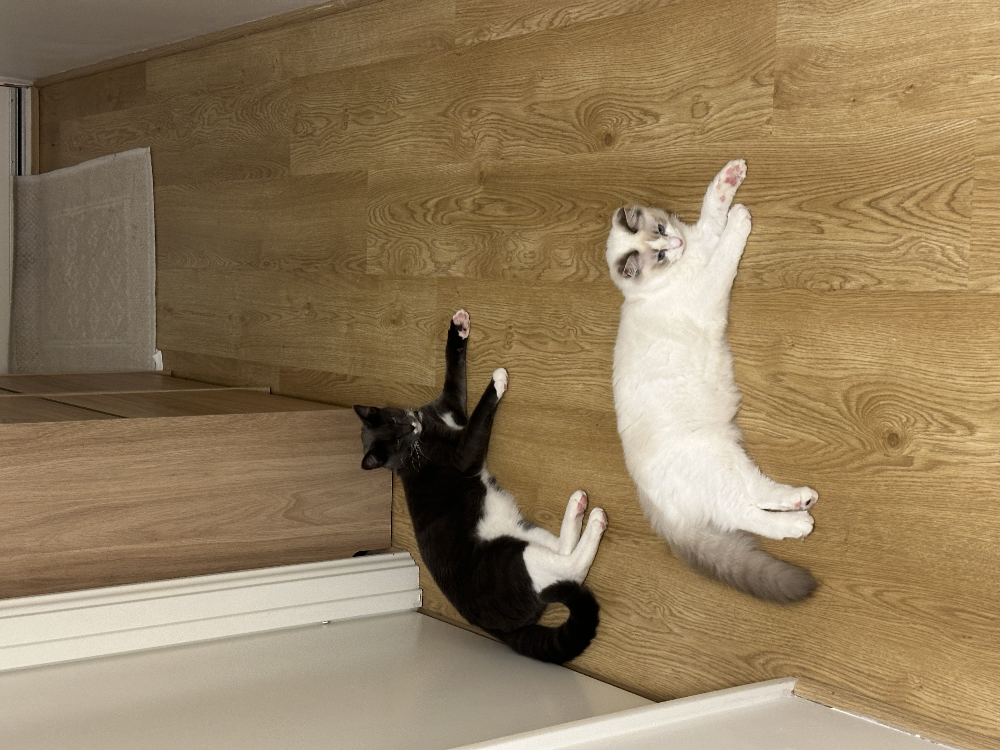

My cats
Nimbus

Mischievous and gluttonous. Moody when his alone time gets disturbed. He tries his best to be a gentleman.
Nimbu's name was inspired by the Nimbus 2000 broomstick from the Harry Potter franchise and the Flying Nimbus from the Dragon Ballfranchise.
Nimbus's stats
- Age: 10 months
- Breed: Domestic shorthair (Tuxedo)
- Sex: Male
- Likes: Head pats
Suki

Princess behaviour. No concept of personal space. Very vocal.
Suki's name was inspired by the Kyoshi Warrior from the Avatar the Last Airbender franchise.
Suki's stats
- Age: 8 months
- Breed: Ragdoll
- Sex: Female
- Likes: Attention
Gallery


